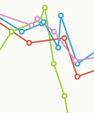

Graphr
- 
Prompted by the impending en masse attendance of the Rattle team at the dConstruct 2010 conference, we thought it'd be interesting to somehow compare our different experiences of the event - which is after all a cross-disciplinary affair.
Given our obsession with data visualisations, we decided to construct an online graph, which would be updated live during the conference with our comments and scores of different moments throughout the day.
The resulting graph proved interesting and insightful, with times of convergence and divergence of experiences amongst the team. It also attracted plenty of attention, and allowed some of our friends not at the conference to follow through our visualisation.
We reused the software behind the chart for a couple of subsequent events, including Playful 2010, and released it as open source for others to use too.